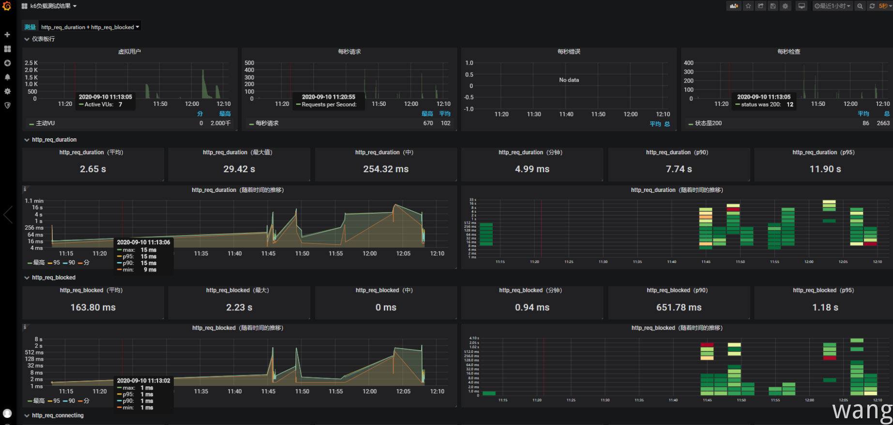

k6 是GitHub上提供的开源负载测试工具，使用Go编写。测试脚本使用JavaScript编写。
先决条件
概念
入门
1 2 3 4 5 6 import http from 'k6/http' ;import { sleep } from 'k6' ;export default function ( http.get('http://localhost:5000/api/values' ); }
多Vu和指定时长
1 k6 run --vus 10 --duration 10s ValuesApiK6.js
使用配置选项
1 2 3 4 5 6 7 8 9 10 11 12 13 14 import http from "k6/http" ;import { sleep,check } from "k6" ;export let options = { vus : 10 , duration : '10s' , }; export default function ( let res = http.get("http://localhost:5000/api/values" ); check(res, { 'status was 200' : r =>200 }); sleep(1 ); }
阶段负载
1 2 3 4 5 6 7 8 9 10 11 12 13 14 15 16 17 18 import http from "k6/http" ;import { sleep, check } from "k6" ;export let options = { stages : [ { duration : "3s" , target : 2 }, { duration : "5s" , target : 3 }, { duration : "6s" , target : 10 }, ], }; export default function ( let res = http.get("http://localhost:5000/api/values" ); check(res, { "status was 200" : (r ) => r.status == 200 }); sleep(1 ); }
可能出现的异常：using multiple execution config shortcuts (durationandstages) simultaneously is not allowed 不允许同时使用多个执行配置快捷方式(“duration”和“stages”)。
断言
需要import { sleep, check } from "k6"; 引入check模块。
1 check(res, { "status was 200" : (r) => r.status == 200 });
测试结果
1 2 3 4 5 6 7 8 9 10 11 12 13 14 15 16 17 18 19 20 21 22 23 24 25 26 27 28 29 execution: local- script: ValuesApiK6.js output : - scenarios: (100.00 %) 1 executors, 10 max VUs, 44s max duration (incl. graceful stop): * default : Up to 10 looping VUs for 14s over 3 stages (gracefulRampDown: 30s, gracefulStop : 30s) I running (16. 0s), 00 /10 VUs, 38 complete and 0 interrupted iterations default ✓ [======================================] 00 /10 VUs 14s9 ✓ status was 200 checks.....................: 100.00 % ✓ 38 ✗ 0 data_received..............: 176 MB 11 MB/s data_sent..................: 3.3 kB 208 B/s http_req_blocked...........: avg=79.1 µs min=0s med=0s max=2ms p(90 )=0s p(95 )=149.71 µs http_req_connecting........: avg=52.85 µs min=0s med=0s max=1. 01ms p(90 )=0s p(95 )=149.71 µs http_req_duration..........: avg=682. 14ms min=332. 4ms med=516. 59ms max=1. 66s p(90 )=1. 22s p(95 )=1. 44s http_req_receiving.........: avg=10. 39ms min=3. 98ms med=8. 97ms max=37. 89ms p(90 )=16. 85ms p(95 )=23. 37ms http_req_sending...........: avg=0s min=0s med=0s max=0s p(90 )=0s p(95 )=0s http_req_tls_handshaking...: avg=0s min=0s med=0s max=0s p(90 )=0s p(95 )=0s http_req_waiting...........: avg=671. 75ms min=323. 42ms med=508. 61ms max=1. 65s p(90 )=1. 21s p(95 )=1. 43s http_reqs..................: 38 2.374567 /s iteration_duration.........: avg=1. 68s min=1. 33s med=1. 51s max=2. 66s p(90 )=2. 22s p(95 )=2. 44s iterations.................: 38 2.374567 /s vus........................: 0 min=0 max=9 vus_max....................: 10 min=10 max=10
测试细节
execution k6执行模式（本地或云）output 测试结果的输出。默认值为stdoutscript: script.js 显示正在执行的脚本的名称duration 测试运行时间iterations VU 迭代的总数vus 测试将开始运行的VU的初始数量max 测试将扩展的VU的最大数量
测试指标分析参考：https://k6.io/docs/using-k6/metrics
测试结果输出第三方平台
参考：https://k6.io/docs/getting-started/results-output#output-plugins
输出Json格式
1 k6 run --summary-export=export.json test.js
输出JSON格式详细信息
使用 --out/-o 选项使k6输出JSON格式的详细统计信息
1 k6 run --out json=my_test_result.json test.js
参考：https://k6.io/docs/using-k6/http-requests#url-grouping
K6内置指标
参考：https://k6.io/docs/using-k6/metrics#custom-metrics
HTTP内置指标
参考：https://k6.io/docs/using-k6/metrics#metric-types
阈值
阈值是通过/失败标准，用于指定被测系统的性能期望
预期示例（阈值）：
系统产生的错误不超过1％
95％的请求的响应时间应小于200ms
99％的请求的响应时间应低于400毫秒
特定端点必须始终在300毫秒内响应
阈值分析性能指标并确定最终测试结果（通过/失败）。阈值对于负载测试自动化至关重要
参考：https://k6.io/docs/using-k6/thresholds
分析结果可视化
influxdb
安装目录下运行启动 influxdb
启动客户端输入命令开始操作 influx
k6 run --out influxdb=http://localhost:8080/test ValuesApiK6.js
Grafana
